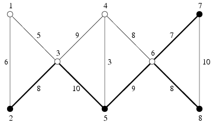

比特铁路系统需要重新布置。通过对铁路网络深入的分析，有一些站点需要被移除，有一些道路也需要被移除。
整个铁路网络可以看做一张由n个点，m条道路组成的无向图。从每一个点出发都可以通过直接或间接的道路到达其它所有点。两个站点之间最多只有一条道路。每一条道路都有一个正整数费用。你的任务是决定哪些点和道路需要被保留。
要求：
1.从每一个没被移除的点出发都能通过直接或间接的没被移除的道路到达其他所有没被移除的点。
2.剩下的道路的费用总和要比较小，即不能超过最优解的两倍。
| F.A.Qs | Home | Discuss | ProblemSet | Status | Ranklist | Contest | 入门OJ | ModifyUser Xeonacid | Logout | 捐赠本站 |
|---|
